knitr::opts_chunk$set(cache.lazy = FALSE)Exercise 2B: Xenium QC
QC imaging ST data
Imaging-based spatial transcriptomics platforms require specific quality control steps because of the specific technology they use. Three sources of error are specific to imaging-based ST and shape the QC strategy:
- Background / non-specific signal — probes from the targeted panel can bind off-target, and the optical decoding can miscall a transcript. Xenium ships dedicated negative controls that let us measure this noise floor directly. See this nice paper critically assessing the off-target probes Hallinan et al., 2026.
- Segmentation quality — the cell and nucleus boundaries are inferredm and over- and under-segmentation, anucleate cells, and bordering artifacts can corrupt downstream counts.
- Spatial context — artifacts such as tissue-edge cells, isolated debris, and field-of-view seams are invisible to per-cell metrics alone; they reveal themselves only when QC values are mapped back onto tissue.
Note
Throughout this exercise we use the Voyager and SpatialFeatureExperiment (SFE) ecosystem. Voyager. The QC steps here closely follow the official Voyager Xenium vignette, which is the recommended further reading.
Learning objectives
By the end of this exercise you should be able to:
- Identify the different negative control categories in Xenium output and use them to estimate the background / false-detection rate.
- Compute and interpret per-cell QC metrics appropriate for a targeted imaging panel, including panel-size normalisation.
- Diagnose cell segmentation quality using cell area, nucleus area, the nucleus-to-cell ratio, and the presence of nuclei.
- Detect spatial outliers (isolated cells, edge artifacts) using nearest-neighbour distances.
- Evaluate gene-level QC via the mean–variance relationship relative to negative controls.
- Combine these signals into a defensible filtering decision and apply it to the object.
Libraries
Load the Xenium object
We start with the Xenium object saved at the end of Exercise 1B. It is a SpatialFeatureExperiment saved with alabaster.sfe package.
# Reload the SpatialFeatureExperiment object if not in the R session already
sfe <- alabaster.base::readObject(here::here("results/day1/01.1b_sfe_xenium"))
## Otherwise, quickly go through Exercise day1-1b to recreate the object
sfeclass: SpatialFeatureExperiment
dim: 541 52569
metadata(1): Samples
assays(1): counts
rownames(541): ABCC8 ACP5 ... UnassignedCodeword_0330
UnassignedCodeword_0338
rowData names(3): ID Symbol Type
colnames(52569): ablhnkec-1 ablhpkkh-1 ... oikdmkkf-1 oikeebja-1
colData names(9): transcript_counts control_probe_counts ...
nucleus_area sample_id
reducedDimNames(0):
mainExpName: NULL
altExpNames(0):
spatialCoords names(2) : x_centroid y_centroid
imgData names(4): sample_id image_id data scaleFactor
unit: micron
Geometries:
colGeometries: centroids (POINT), cellSeg (MULTIPOLYGON), nucSeg (MULTIPOLYGON)
Graphs:
sample01: Negative probes
Xenium includes several categories of control features alongside the real gene targets. They are flagged in rowData(sfe)$Type and each allows us estimate a different noise source:
- Negative Control Probe — real probes targeting non-biological sequences. Their counts estimate the probe-level background, mainly non-specific hybridisation, with a smaller contribution from decoding error.
- Negative Control Codeword — valid codewords deliberately left unassigned to any gene; no probe should ever produce them, so their counts measure decoding / optical error alone. These are used to calibrate the per-transcript quality scores.
- Unassigned Codeword — leftover unused codeword space with no assigned probe. Counts should be negligible; reported for completeness rather than used as a primary QC metric.
Looking at a couple of features per category:
as.data.frame(rowData(sfe)) |>
tibble::rownames_to_column("feature") |>
group_by(Type) |>
slice_head(n = 2) |>
ungroup() |>
dplyr::select(feature, Type)# A tibble: 8 × 2
feature Type
<chr> <chr>
1 ABCC8 Gene Expression
2 ACP5 Gene Expression
3 NegControlCodeword_0500 Negative Control Codeword
4 NegControlCodeword_0501 Negative Control Codeword
5 NegControlProbe_00042 Negative Control Probe
6 NegControlProbe_00041 Negative Control Probe
7 UnassignedCodeword_0005 Unassigned Codeword
8 UnassignedCodeword_0007 Unassigned Codeword We build a logical index for each control category. These indices are reused below, both to compute per-cell background and to exclude controls when counting “real” signal.
[1] "Probe controls in the data: 20"[1] "Decoding controls in the data: 41"[1] "gDNA controls in the data: 58"# assign all negative control indices to one vector
is_any_neg <- is_blank | is_neg | is_neg2
table(is_any_neg)is_any_neg
FALSE TRUE
422 119 addPerCellQCMetrics() (from scuttle) computes, for every cell, the total counts and the percentage of counts falling into each subset we hand it. The _percent columns are the key background metric.
# run scuttle() automatic QC function
sfe <- addPerCellQCMetrics(sfe, subsets = list(unassigned = is_blank,
negProbe = is_neg,
negCodeword = is_neg2,
any_neg = is_any_neg))We plot the histograms of the per-cell negative-control percentages. A healthy run shows most cells at very low percentages, with a thin tail of suspect cells. The log x-axis spreads out that tail.
cols_use <- names(colData(sfe))[str_detect(names(colData(sfe)), "_percent$")]
plotColDataHistogram(sfe, cols_use, bins = 100) +
scale_x_log10() +
annotation_logticks(sides = "b")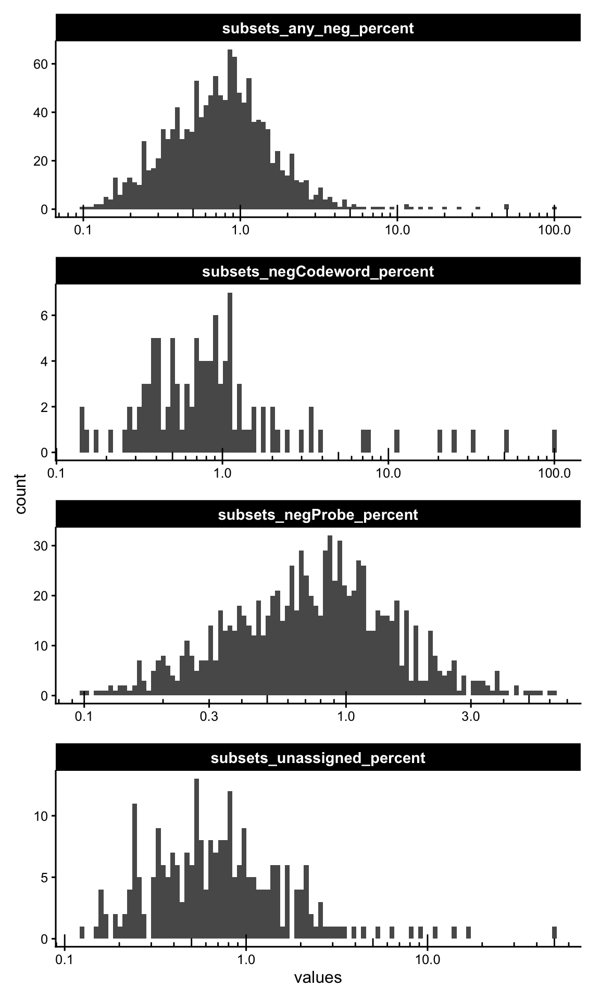
Plotting the absolute per-cell sums for each category, informs on the raw magnitude of background counts; most cells should have only a handful of negative control counts.
cols_use <- names(colData(sfe))[str_detect(names(colData(sfe)), "_sum$")]
plotColDataHistogram(sfe, cols_use, bins = 20, ncol = 2) +
scale_x_continuous(
breaks = function(x) {
br <- scales::breaks_extended(Q = c(1, 2, 5))(x)
br[br == floor(br)]
}
) +
scale_y_log10() +
annotation_logticks(sides = "l")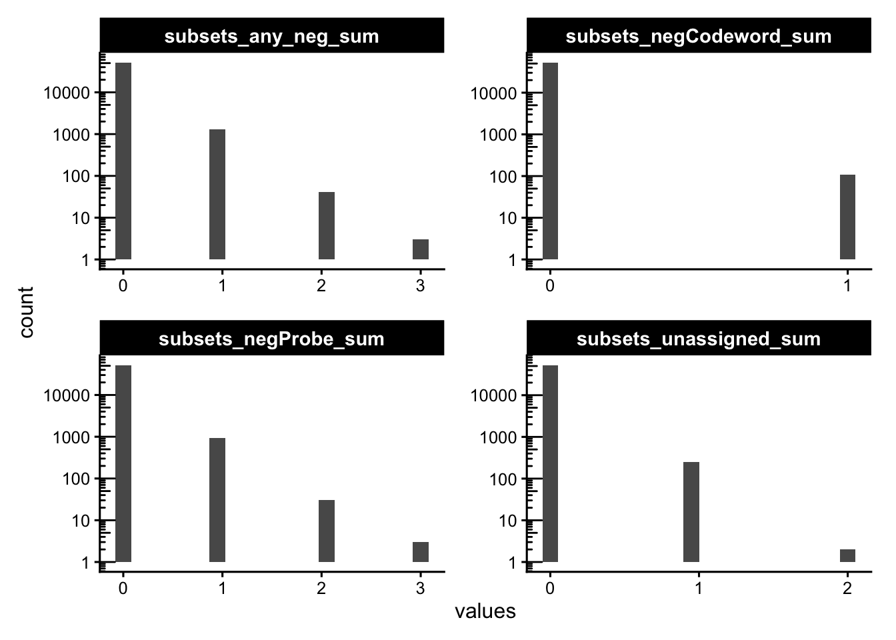
Mapping the background back to the slide is the real test: random optical/hybridisation noise should be spatially uniform. If suspicious cells cluster in a region or along a seam, this indicates a localized artifact (e.g. tissue fold, focus problem) rather than generic noise. Here we flag cells above 10% negative control probes counts.
sfe$more_neg <- sfe$subsets_any_neg_percent > 10
plotSpatialFeature(sfe, "subsets_any_neg_sum", colGeometryName = "cellSeg",
show_axes = TRUE) +
geom_sf(data = SpatialFeatureExperiment::centroids(sfe)[sfe$more_neg,],
size = 0.5, color = "darkred") +
theme(legend.position = "bottom")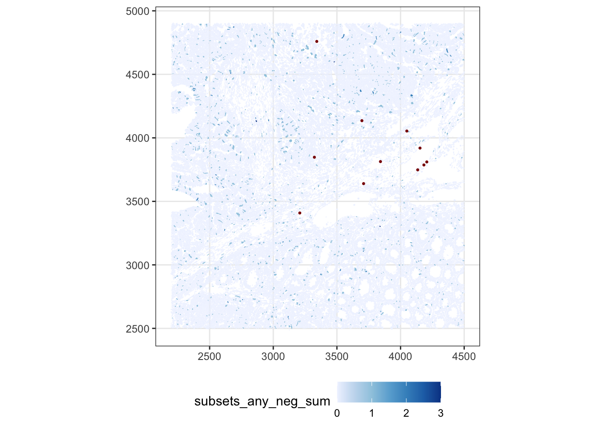
ImportantExercise 1
Change this cutoff to a more stringent one. What do you conclude about the quality of this sample?
TipAnswer
sfe$more_neg <- sfe$subsets_any_neg_percent > 3
plotSpatialFeature(sfe, "subsets_negProbe_sum", colGeometryName = "cellSeg",
show_axes = TRUE) +
geom_sf(data = SpatialFeatureExperiment::centroids(sfe)[sfe$more_neg,],
size = 0.5, color = "darkred") +
theme(legend.position = "bottom")We can also go below the cell level and look at where the negative transcripts physically land, straight from transcripts.parquet.
neg_features <- as.character(rownames(sfe)[is_any_neg])
tx <- arrow::read_parquet(
"data/Human_Colon_Cancer_P2/xenium/outs/transcripts.parquet"
)
tx_neg <- tx[tx$feature_name %in% neg_features, ]
# plot only cached small object
ggplot(tx_neg, aes(x_location, -y_location)) +
geom_bin2d(binwidth = 30) +
scale_fill_distiller(palette = "Blues", direction = 1) +
labs(x = NULL, y = NULL)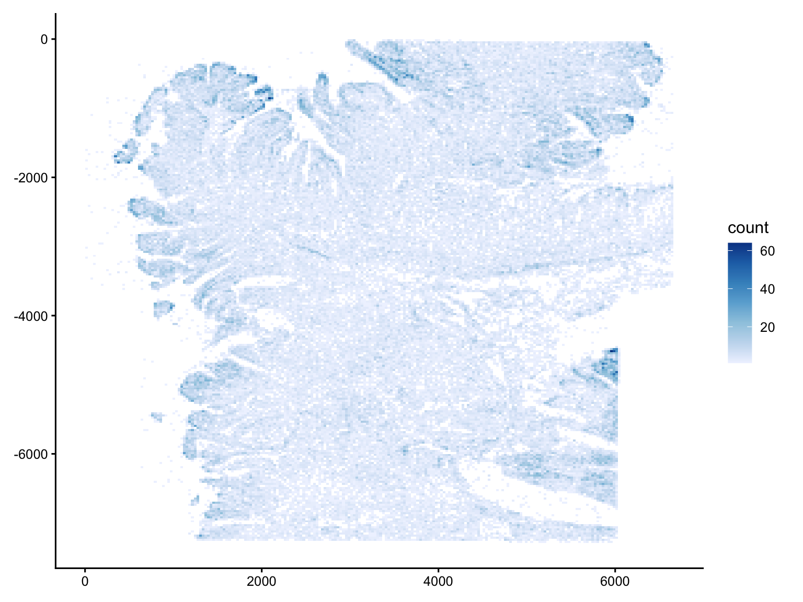
The negative-control signal is low across the entire tissue (most bins are pale, in the single digits), and cleanly outlines the tissue footprint, with the off-tissue area essentially empty.
The denser bins are not random: they coincide with morphologically crowded regions, see for example the folded edge along the left margin, or the structure in the lower-right. Cells with higher transcript complexity could also lead to more non-specific binding and misdecoding since more amplified product leads to more non-specific binding and misdecoding.
Crucially, there are no straight lines, regular grids, or isolated bright squares in empty space, so there is no sign of field-of-view stitching seams or discrete optical artifacts.
ImportantExercise 2
In a similar way, plot the counts of transcripts assigned to negative controls for the cropped SFE object that we used before. What do you conclude about the selected ROI?
Cell quality
Now we turn to the cells themselves. Note that the QC metrics add in the colData (*_sum, *_percent) by scuttle included the control feature, so we recompute them after excluding every control feature.
Because the panel size can differ across Xenium runs, we also calculate the panel-normalised versions (*_normed), which make these metrics comparable across datasets.
Let’s plot the distribution of counts and detected genes. With a targeted panel these are typically much lower than scRNA-seq, making it harder to identify a clear low-count population to exclude.
p1 <- plotColDataHistogram(sfe, c("nCounts", "nGenes"))
p2 <- plotColDataHistogram(sfe, c("nCounts_normed", "nGenes_normed"))
p1 | p2 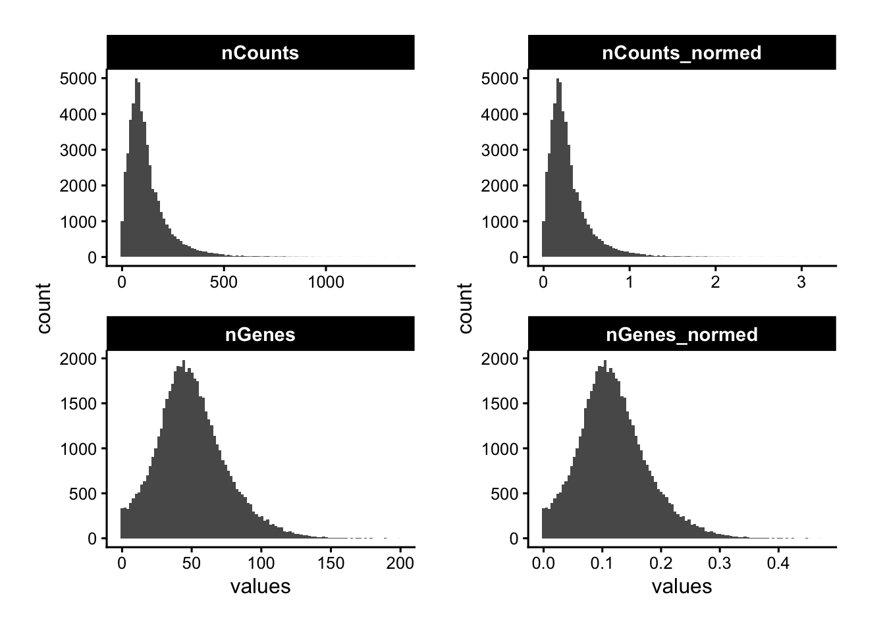
Mapping counts and genes in space reveals whether low-signal cells are concentrated in specific tissue regions, which could be due to a biological structure, but also a technical dropout zone to investigate.
p1 <- plotSpatialFeature(sfe, "nCounts", colGeometryName = "cellSeg")
p2 <- plotSpatialFeature(sfe, "nGenes", colGeometryName = "cellSeg")
p1 | p2 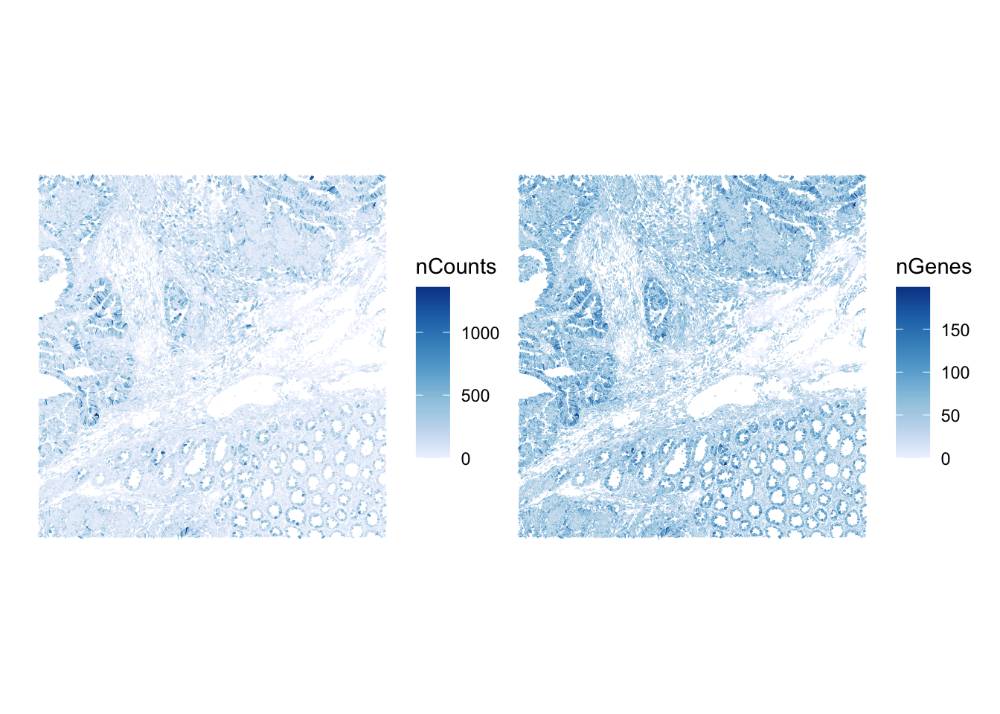
The metrics nCounts vs nGenes should be tightly, monotonically related. Cells off this trend — many counts but few genes — can indicate a dominant transcript or a contamination/segmentation issue.
plotColData(sfe, x="nCounts", y="nGenes", bins = 70) +
scale_fill_distiller(palette = "Blues", direction = 1)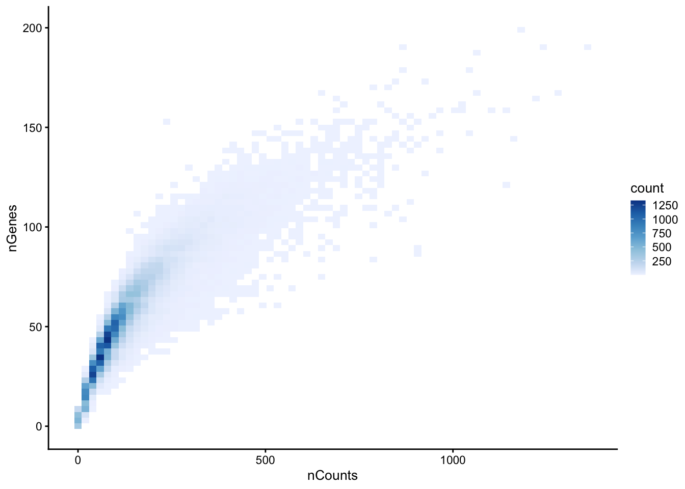
ImportantExercise 3
The cell-level metrics inherit whatever decoding quality the transcripts had. Using transcripts.parquet, explore the per-transcript quality value (qv, a Phred-scaled decoding confidence). What fraction of transcripts fall below the conventional Q20 cutoff, and which genes have the lowest mean qv?
TipAnswer
qv measures how confidently each transcript was decoded; 10X’s default pipeline already filters at Q20, but inspecting the distribution tells you how aggressive that cutoff is, and a low per-gene mean qv should be treated with caution.
# Distribution of decoding quality, with the Q20 reference line
tx |>
ggplot(aes(qv)) +
geom_histogram(bins = 100) +
geom_vline(xintercept = 20, color = "red", linetype = 2) +
labs(x = "Transcript quality value (qv)", y = "count")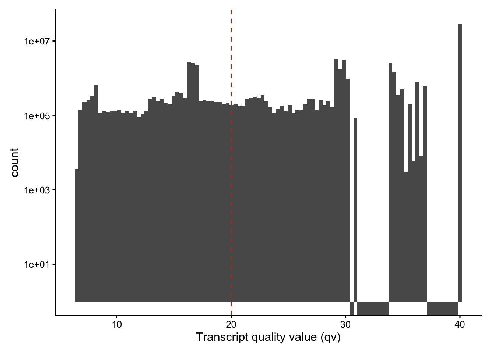
# Fraction below Q20
mean(tx$qv < 20)[1] 0.2361057# Lowest-confidence real genes (drop control features by their name prefixes)
tx |>
filter(!str_detect(feature_name,
"^(NegControl|UnassignedCodeword|BLANK|antisense|DeprecatedCodeword)")) |>
group_by(feature_name) |>
summarise(mean_qv = mean(qv), n = n(), .groups = "drop") |>
arrange(mean_qv) |>
head(10)# A tibble: 10 × 3
feature_name mean_qv n
<chr> <dbl> <int>
1 Clonotype1_TRA2 13.5 1406
2 Clonotype1_TRB 17.1 862
3 NKX2-2 18.9 4461
4 CRYBA2 20.6 4972
5 TRDV1 20.7 4089
6 FCER2 21.1 6872
7 CTSG 22.2 6577
8 BMX 22.2 8225
9 FEV 22.7 3244
10 IL4I1 23.1 6226Cell area
Segmentation produces a polygon for each cell and (where detected) its nucleus. The areas of these polygons are among the most informative QC metrics in imaging-based ST: implausibly small cells are usually fragments from over-segmentation, while very large ones may be indicating merged neighbours.
plotColDataHistogram(sfe, c("cell_area", "nucleus_area"), scales = "free_y")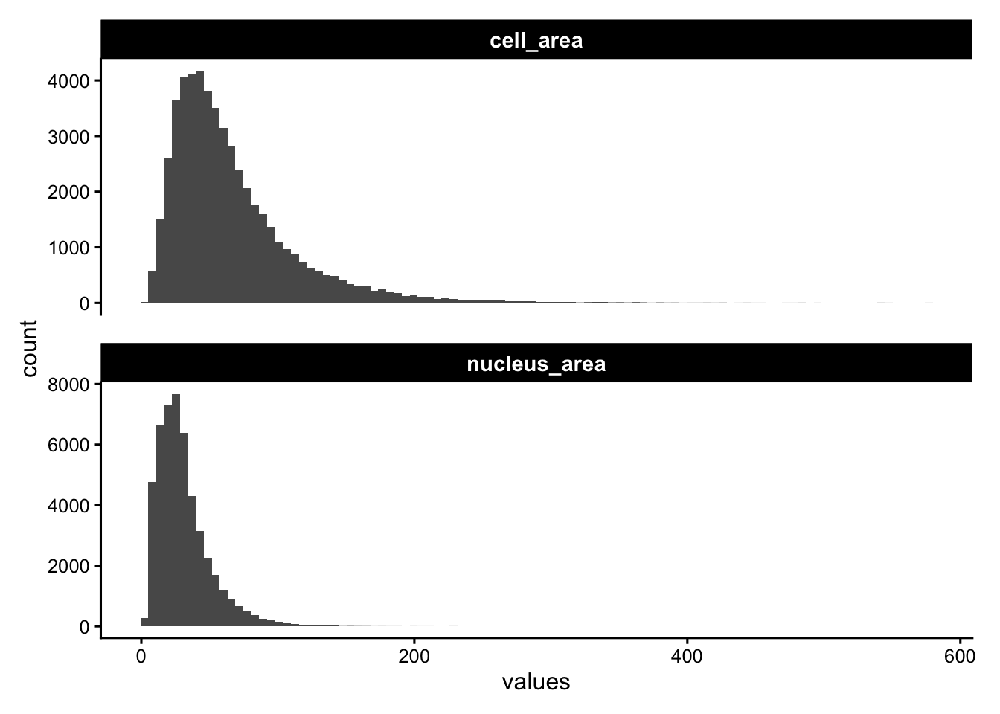
Spatial maps of cell and nucleus area highlight whether size anomalies are localized, indicating potentially a poorly segmented region.
p1 <- plotSpatialFeature(sfe, "cell_area", colGeometryName = "cellSeg", show_axes = TRUE)
p2 <- plotSpatialFeature(sfe, "nucleus_area", colGeometryName = "nucSeg",show_axes = TRUE)
p1 | p2 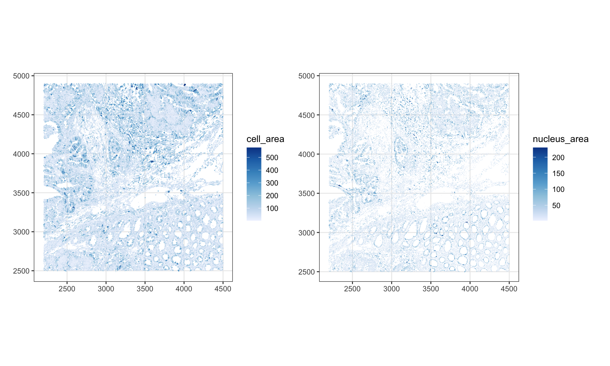
It is always worth zooming in on the raw geometry to check the quality of segmentation visually. Here we overlay cell and nucleus boundaries within a smaller bounding box.
roi_zoomed <- c(
xmin = 3200,
xmax = 3700,
ymin = 3500,
ymax = 3900
)
plotGeometry(sfe, colGeometryName = c("cellSeg", "nucSeg"), fill = FALSE,
dark = TRUE, image_id = NULL, bbox = roi_zoomed)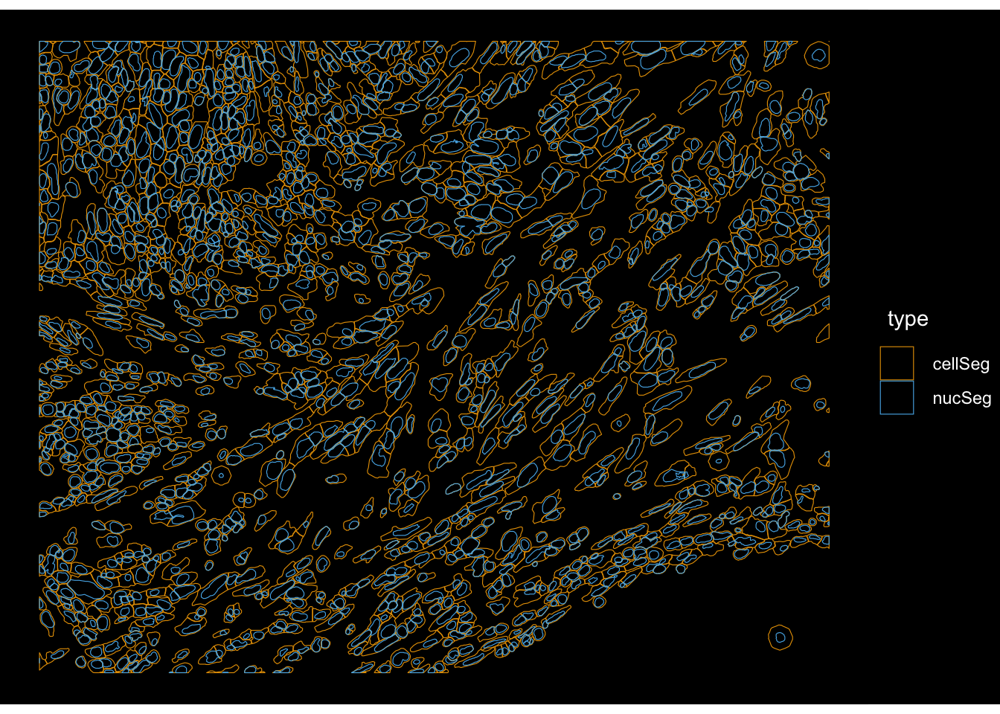
The nucleus-to-cell ratio (prop_nuc) is a compact segmentation-quality summary. Values near 1 mean that a “cell” is essentially just composed of a nucleus, potentially indicating a failed cytoplasm segmentation. Very low values can indicate over-extended cell boundaries.
colData(sfe)$prop_nuc <- sfe$nucleus_area / sfe$cell_area
plotColDataHistogram(sfe, "prop_nuc")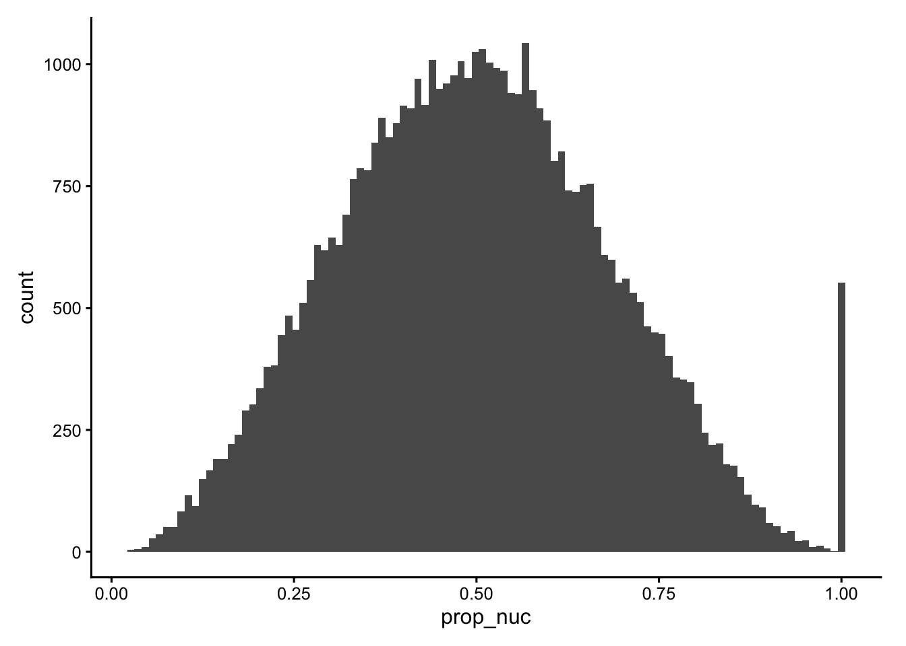
plotSpatialFeature(sfe, "prop_nuc", colGeometryName = "cellSeg")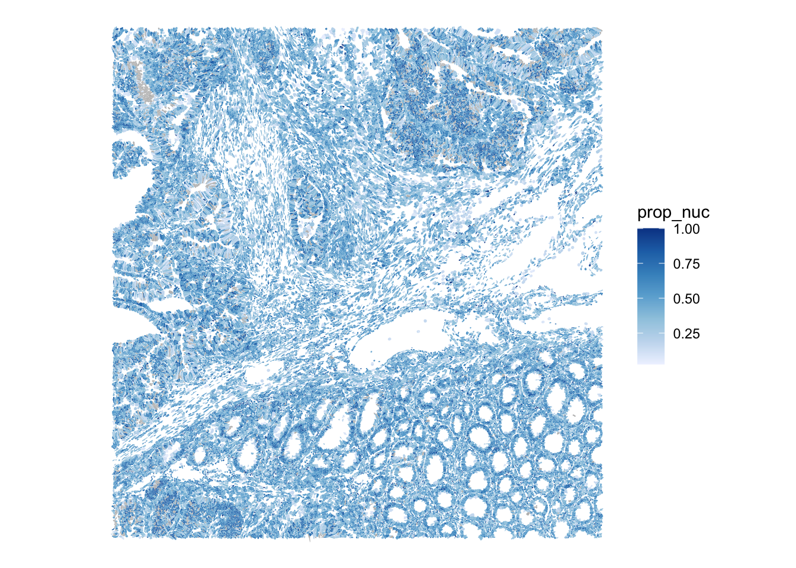
A pairwise matrix of all the cell-level QC metrics lets us spot correlations and joint outliers at a glance, e.g. the expected positive relationship between area and counts, and any cells that violate it.
cols_use <- c("nCounts", "nGenes", "cell_area", "nucleus_area", "prop_nuc")
df <- colData(sfe)[,cols_use] |> as.data.frame()
ggplot(df) +
geom_bin2d(aes(x = .panel_x, y = .panel_y), bins = 30) +
geom_autodensity(fill = "gray90", color = "gray70", linewidth = 0.2) +
facet_matrix(vars(tidyselect::everything()), layer.diag = 2) +
scale_fill_distiller(palette = "Blues", direction = 1) +
theme(axis.text.x = element_text(size = 8))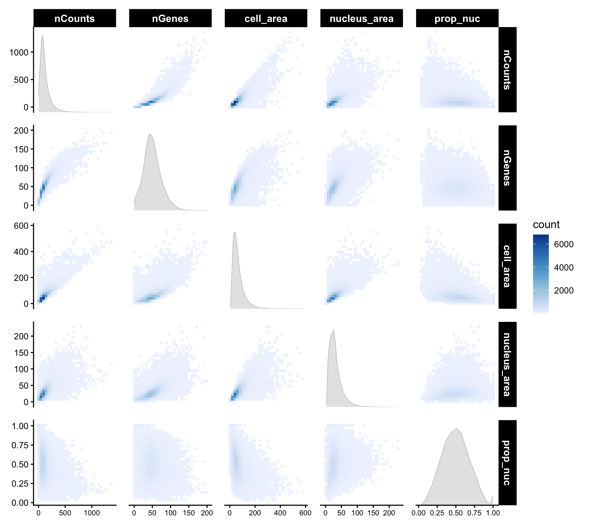
Some of these metrics could be better plotted on a log scale:
plotColDataHistogram(sfe, c("nCounts", "cell_area")) +
scale_x_log10() +
annotation_logticks(sides = "b")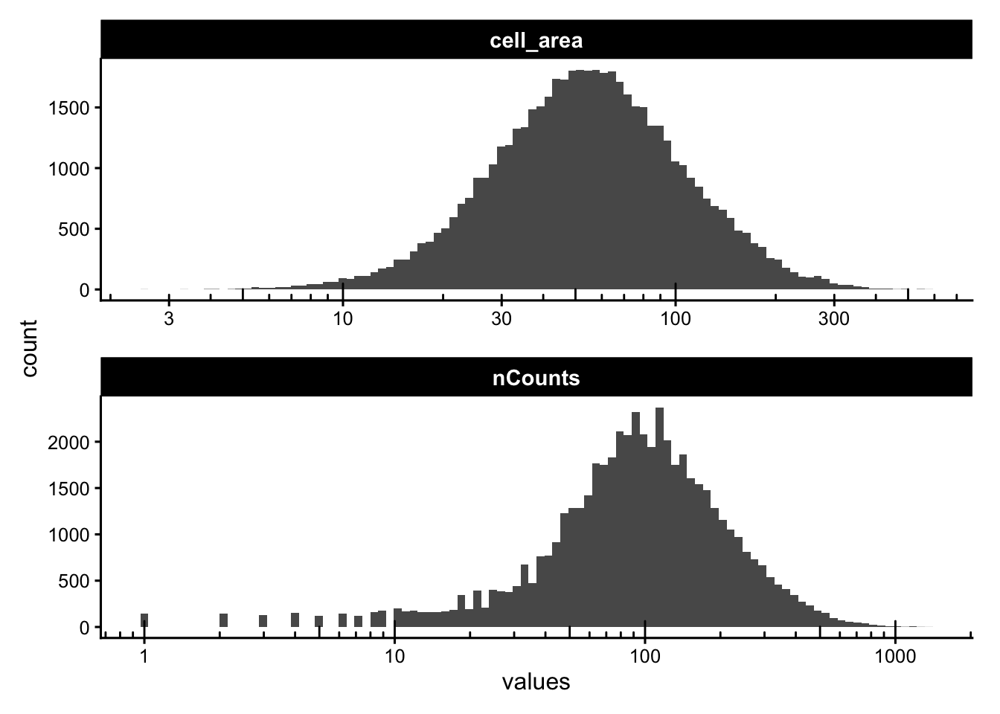
Some segmented cells have no detected nucleus. Depending on the tissue these can be genuine (anucleate fragments, sectioning artifacts) or spurious. We flag them and check how they relate to cell area.
sfe$has_nuclei <- !is.na(sfe$nucleus_area)
plotColData(sfe, y = "has_nuclei", x = "cell_area",
point_fun = function(...) list())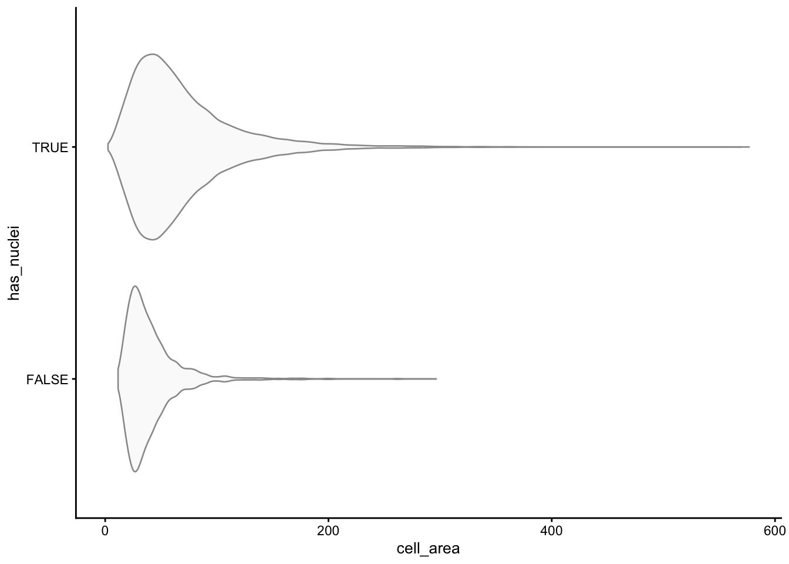
plotSpatialFeature(sfe, "has_nuclei", colGeometryName = "cellSeg",
show_axes = TRUE) +
# To highlight the cells that don't have nuclei
geom_sf(data = SpatialFeatureExperiment::centroids(sfe)[!sfe$has_nuclei,],
color = "orange", size = 0.3)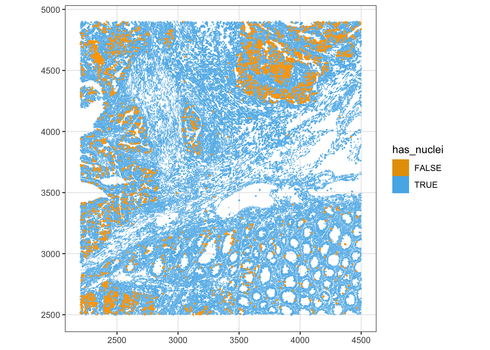
roi_zoomed <- c(
xmin = 3700,
xmax = 3900,
ymin = 4400,
ymax = 4600)
plotGeometry(sfe, colGeometryName = c("cellSeg", "nucSeg"), fill = FALSE,
dark = TRUE, image_id = NULL, show_axes = TRUE,bbox = roi_zoomed)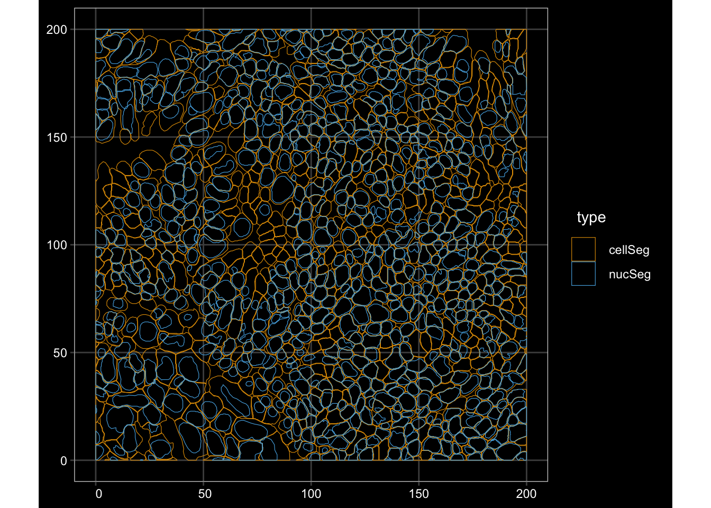
ImportantExercise 4
In the nCountsvs. cell_area pairwise plot, counts and cell area were overall positively correlated. Investigate the outlier cells with very high counts in a small area, which would be candidate for doublets or contamination. Cells with large areas and few counts are candidate for merged or empty segments. Flag scuhg outliers and check where they are located in the tissue.
TipAnswer
Counts-per-area summarises the relationship in a single value.
df <- colData(sfe) |> as.data.frame()
df$counts_per_area <- df$nCounts / df$cell_area
# Joint distribution
ggplot(df, aes(cell_area, nCounts)) +
geom_bin2d(bins = 80) +
scale_fill_distiller(palette = "Blues", direction = 1) +
scale_x_log10() + scale_y_log10() +
annotation_logticks() +
labs(x = "cell area", y = "nCounts")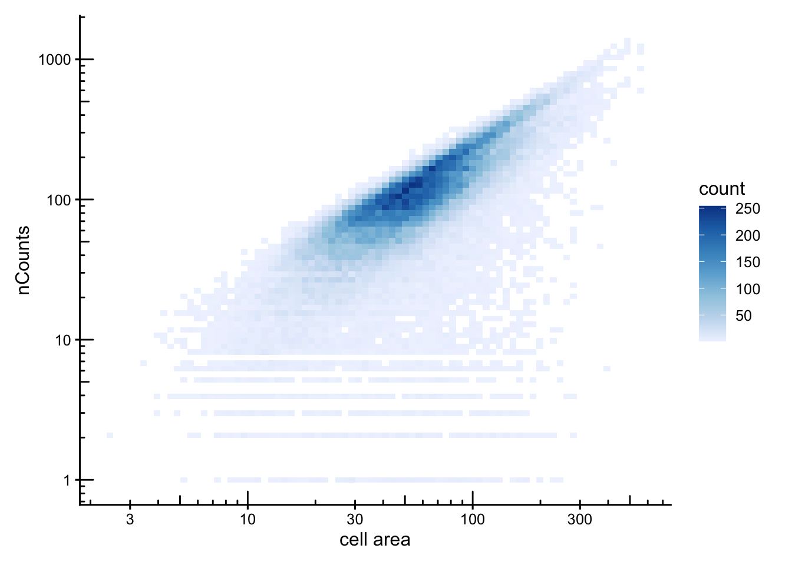
ggplot(df,aes(x = counts_per_area)) + geom_density()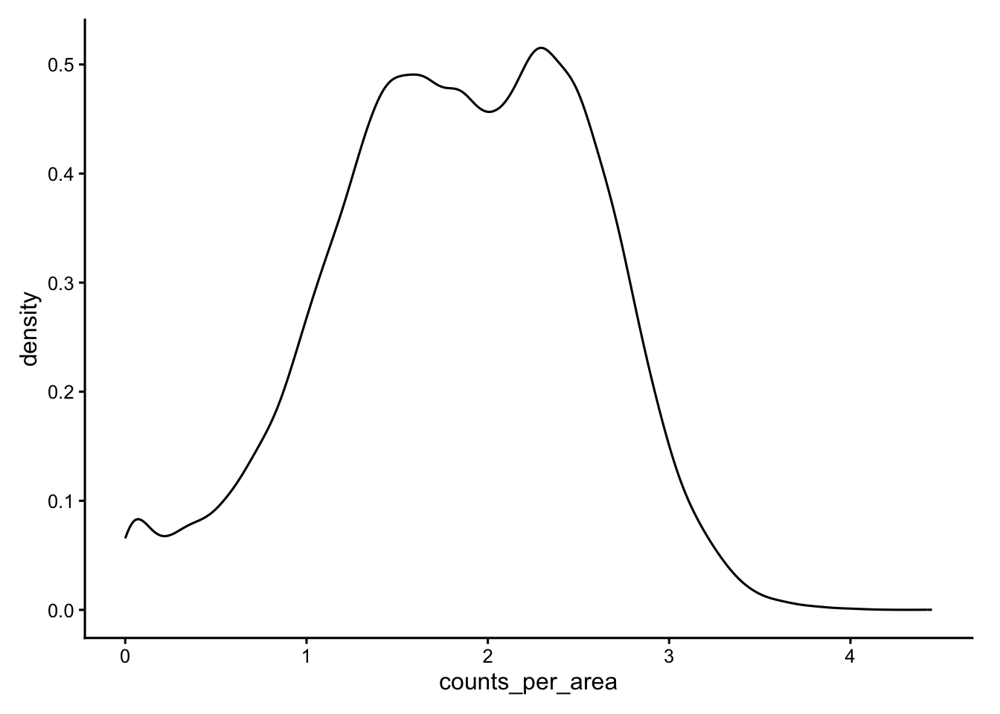
# Flag the dense upper tail
sfe$dense_outlier <- df$counts_per_area > 3.5
table(sfe$dense_outlier)
FALSE TRUE
52434 135 plotSpatialFeature(sfe, "dense_outlier", colGeometryName = "cellSeg",
show_axes = TRUE)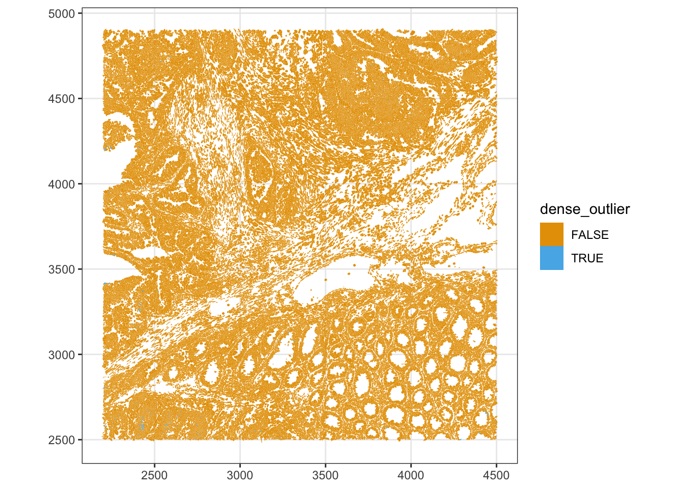
Spatial clustering of these outliers suggests a segmentation artifact rather than genuinely dense cell types.
Spatial outlier detection
Cells located far from their neighbours are typically debris, edge fragments, or detections outside the main tissue. We use a k-nearest-neighbour graph on the centroids and look at the maximum and minimum neighbour distances per cell.
g <- findKNN(spatialCoords(sfe)[,1:2], k = 5, BNPARAM = AnnoyParam())
max_dist <- rowMaxs(g$distance)
data.frame(max_dist = max_dist) |>
ggplot(aes(max_dist)) +
geom_histogram(bins = 100) +
scale_y_continuous(transform = "log1p") +
scale_x_continuous(breaks = breaks_pretty()) +
annotation_logticks(sides = "l")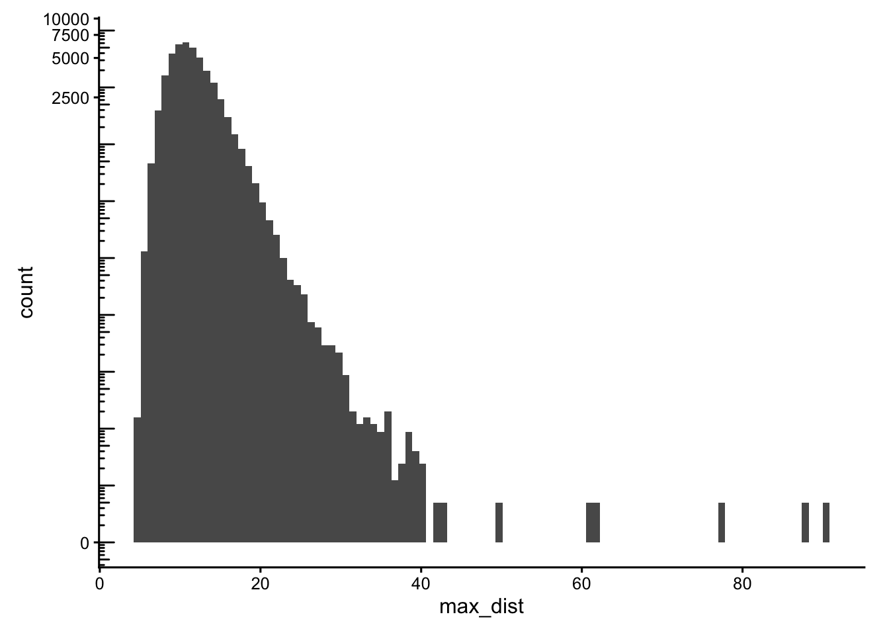
min_dist <- rowMins(g$distance)
data.frame(min_dist = min_dist) |>
ggplot(aes(min_dist)) +
geom_histogram(bins = 100) +
scale_y_continuous(transform = "log1p") +
scale_x_continuous(breaks = breaks_pretty()) +
annotation_logticks(sides = "l")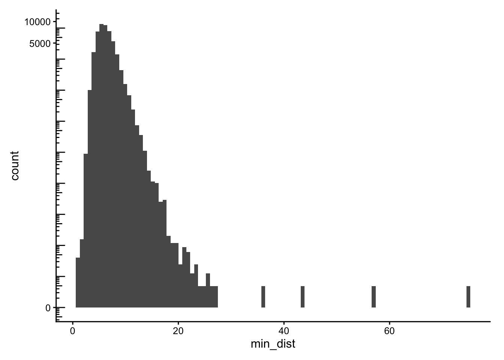
Cells with neighbours too far away (max_dist > 50) or that are oddly isolated (min_dist > 30) are excluded from the main_tissue set. The thresholds are dataset-specific, set using the histograms plotted above.
sfe$main_tissue <- !(max_dist > 50 | min_dist > 30)
plotSpatialFeature(sfe, "main_tissue", colGeometryName = "cellSeg",
show_axes = TRUE) +
# To highlight the outliers
geom_sf(data = SpatialFeatureExperiment::centroids(sfe)[!sfe$main_tissue,],
color = "orange", size = 0.3)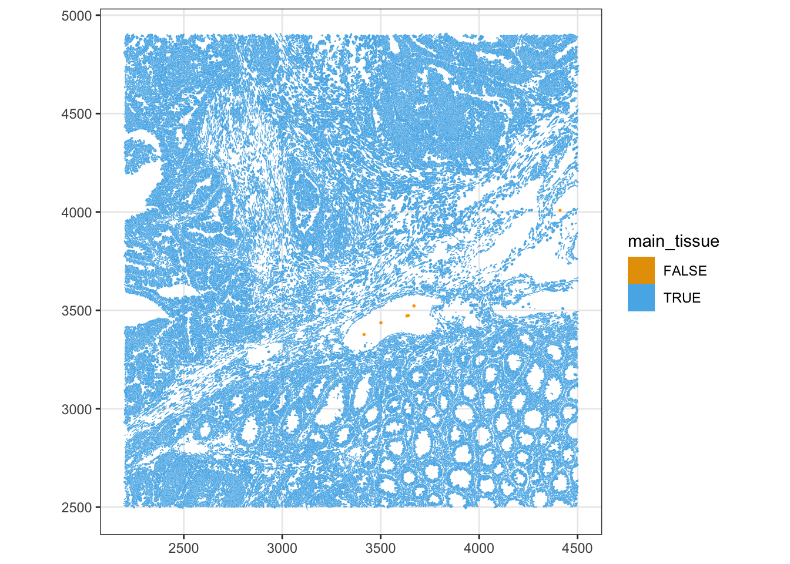
Genes
We should perform QC at the gene-level. We compare each gene’s mean and variance to the negative controls. Real targets should have a clearly higher mean expression than the negative controls; any gene whose mean is comparable to the negative-control range is essentially indistinguishable from background.
rowData(sfe)$means <- rowMeans(counts(sfe))
rowData(sfe)$vars <- rowVars(counts(sfe))
rowData(sfe)$is_neg <- rowData(sfe)$Type != "Gene Expression"
plotRowData(sfe, x = "means", y = "is_neg") +
scale_y_log10() +
annotation_logticks(sides = "b")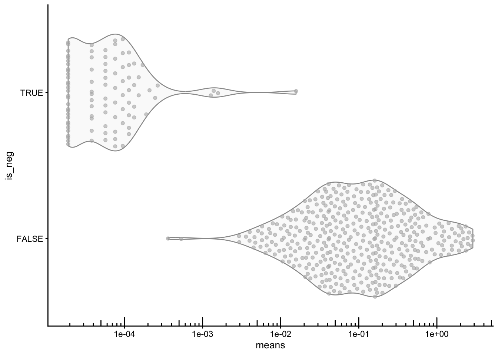
Under pure technical (Poisson) noise, variance should equal the mean. Negative controls should follow that trend, while real genes carrying biological signal are usually overdispersed, and the y=x line.
plotRowData(sfe, x="means", y="vars", color_by = "is_neg") +
geom_abline(slope = 1, intercept = 0, color = "red") +
scale_x_log10() + scale_y_log10() +
annotation_logticks() +
coord_equal() +
labs(color = "Negative control")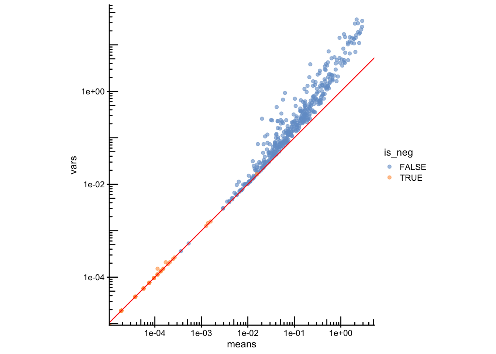
Final filtering
All QC metrics computed above will now be used to filter the final object. We decide on a set of thresholds (background %, minimum counts/genes, nucleus presence, main-tissue membership), report how many cells are removed by each criterion, and apply the combined filter to subset sfe.
Reporting the cells passing each criterion individually and then jointly shows where most of the filtering happens.
qc_keep <- sfe$subsets_any_neg_percent < 5 & # low background
sfe$nCounts >= 10 & # enough real signal
sfe$nGenes >= 5 & # enough detected genes
sfe$has_nuclei & # nucleus was segmented
sfe$main_tissue # not an isolated/edge cell
# How many cells pass each criterion on its own vs. all combined?
data.frame(
criterion = c("neg % < 5", "nCounts >= 10", "nGenes >= 5",
"has_nuclei", "main_tissue", "ALL combined"),
cells_passing = c(sum(sfe$subsets_any_neg_percent < 5,na.rm = TRUE),
sum(sfe$nCounts >= 10),
sum(sfe$nGenes >= 5),
sum(sfe$has_nuclei),
sum(sfe$main_tissue),
sum(qc_keep)),
pct = round(100 * c(sum(sfe$subsets_any_neg_percent < 5,na.rm = TRUE),
sum(sfe$nCounts >= 10),
sum(sfe$nGenes >= 5),
sum(sfe$has_nuclei),
sum(sfe$main_tissue),
sum(qc_keep)) / ncol(sfe), 1)
) criterion cells_passing pct
1 neg % < 5 52383 99.6
2 nCounts >= 10 51109 97.2
3 nGenes >= 5 51716 98.4
4 has_nuclei 49152 93.5
5 main_tissue 52563 100.0
6 ALL combined 47671 90.7# Subset the object
sfe.f <- sfe[, qc_keep]
sfe.fclass: SpatialFeatureExperiment
dim: 541 47671
metadata(1): Samples
assays(1): counts
rownames(541): ABCC8 ACP5 ... UnassignedCodeword_0330
UnassignedCodeword_0338
rowData names(10): ID Symbol ... vars is_neg
colnames(47671): ablhnkec-1 ablhpkkh-1 ... oikdllpb-1 oikeebja-1
colData names(33): transcript_counts control_probe_counts ...
dense_outlier main_tissue
reducedDimNames(0):
mainExpName: NULL
altExpNames(0):
spatialCoords names(2) : x_centroid y_centroid
imgData names(4): sample_id image_id data scaleFactor
unit: micron
Geometries:
colGeometries: centroids (POINT), cellSeg (MULTIPOLYGON), nucSeg (MULTIPOLYGON)
Graphs:
sample01: Save the object
Save the filtered SpatialFeatureExperiment object for the next steps. Run this after applying your filters so that the object on disk matches the QC decisions you made:
alabaster.sfe::saveObject(sfe.f, "results/day1/01.2b_sfe_xenium")Clear your environment:
Important
Key Takeaways:
- Imaging-based ST QC is calibrated by negative controls (probe, codeword, unassigned), which separately estimate hybridisation background and decoding error.
- Panel-normalised counts make metrics comparable across datasets profiled with different gene panels.
- Segmentation must be checked carefully: cell/nucleus area, the nucleus-to-cell ratio, missing nuclei, and visual inspection of the raw polygons.
- Always check QC metrics on tissue — uniform noise is expected; spatial clustering of bad cells could signal a localized technical artifact.
- The mean–variance plot relative to negative controls separates informative genes from those indistinguishable from background.